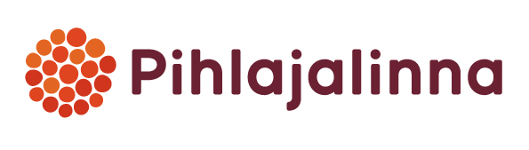
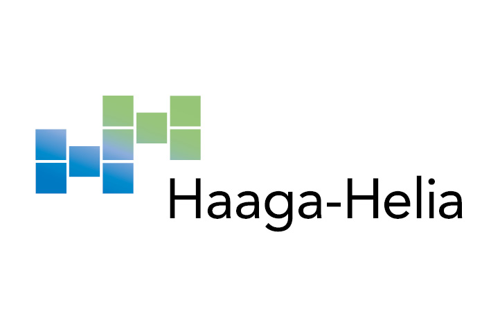

Curriculum Vitae
Viimeisin työkokemus
Bioanalyytikko
2021 - Nykyinen

Teen näytteenottoa, kliinistä fysiologiaa ja vierianalytiikkaa
Bioanalyytikko
2017 - 2021
Toimin preanalytiikassa näytteenottajana 2020 alkaen myös tiimivastaavana
Koulutus
Tradenomi (AMK), Tietojenkäsittely
2024->

Suuntaudun ohjelmistokehitykseen noudattaen pääosin full stack -kehittäjän opintopolkua
Bioanalyytikko (AMK)
2012-2016->
Suoritin bioanalyytikon AMK-tutkinnon Tampereen ammattikorkeakoulussa
Ylioppilas
1993-1996
Padasjoen lukio

Kirjoitin 4 eximiaa ja kaksi magnaa
Kiinnostuksen kohteet
Shakki

Vahvuuslukuni: selo 1908; lichess.org rapid n. 2200
Lukeminen
Yhteiskunta ja politiikka, ohjelmointi